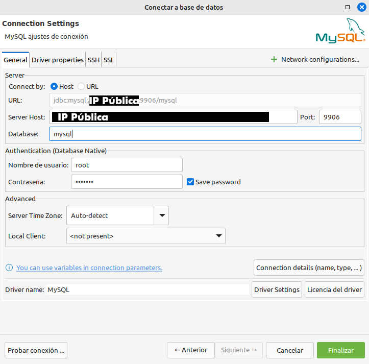

🧾 MySQL / MariaDB
- Baseado nas imaxes oficiais:
- MySQL: https://hub.docker.com/_/mysql
- MariaDB: https://hub.docker.com/_/mariadb
Imos ver e instalar dous sabores deste servidor SQL tan popular.
MySQL
Instalación de MySQL
E recomendable crear un volume previamente cun nome para ter localizado onde temos os datos:
E logo crear o contedor asociado a ese volume:
docker run -p 9906:3306 --name contedor_mysql \
-v datosmysql:/var/lib/mysql \ # (1)!
-e MYSQL_RANDOM_ROOT_PASSWORD=1 \ # (2)!
-e MYSQL_DATABASE=basededatos \ # (3)!
-e MYSQL_USER=usuario \ # (4)!
-e MYSQL_PASSWORD=Contrasinal123. \ # (5)!
--restart unless-stopped \ # (6)!
-d mysql:8
- Volume para os datos.
- Contrasinal de root.
- Crea a base de datos
basededatos. - Crea o usuario
usuariocon acceso de superusaurio abasededatos. - Establece o contrasinal de
usuario(é preciso para que se cree o usuario). - Para que inicie automáticamente o contedor tras un reinicio de docker ou da máquina.
Copia de aquí o comando para que non fallen as novas liñas e espacios:
docker run -p 9906:3306 --name contedor_mysql -v datosmysql:/var/lib/mysql -e MYSQL_RANDOM_ROOT_PASSWORD=1 -e MYSQL_DATABASE=basededatos -e MYSQL_USER=usuario -e MYSQL_PASSWORD=Contrasinal123. --restart unless-stopped -d mysql:8
Aclaracións:
-p 9906:3306redirixe o porto9906do anfitrión ao porto3306do contedor.--envou-eserven para definir variables de entorno (configuración) presentes na imaxe.-vpermite asociar (montar) un directorio local a un directorio de dentro do contedor. Poderíamos asociado un directorio local/root/mysqldatosao contedor en/var/lib/mysqlco parámetro:-v /root/mysqldatos:/var/lib/mysql. Tamén poderíamos mapear un volume anterior con:-v ID_DO_VOLUME:/var/lib/mysql.- Para saber o contrasinal de root asignado aleatoriamente debemos buscar nos logs unha liña que conteña: "[Note] [Entrypoint]: GENERATED ROOT PASSWORD:":
Por último comprobamos que teñamos correctamente asociado o volume de datos ao noso contedor:
Recuperar instancia de MySQL co seu volume
Se queremos recuperar unha instancia borrada, sempre e cando non borrásemos o seu volume de datos, anterior (non fai falta especificar usuarios ou contrasinais):
docker run -p 9906:3306 --name contedor_mysql \
-v datosmysql:/var/lib/mysql \
--restart unless-stopped \
-d mysql:8
(CLI) Conexión con MySQL
MariaDB
Instalación de MariaDB
E recomendable crear un volume previamente cun nome para ter localizado onde temos os datos:
docker run -p 9907:3306 --name contedor_mariadb \
-v datosmariadb:/var/lib/mysql \ # (1)!
--env MARIADB_RANDOM_ROOT_PASSWORD=1 \ # (2)!
--env MARIADB_DATABASE=demaria \ # (3)!
--env MARIADB_USER=usuariamaria \ # (4)!
--env MARIADB_PASSWORD=DonaMaria123456 \ # (5)!
--restart unless-stopped \ # (6)!
-d mariadb:latest
- Volume para os datos.
- Elexir un contrasinal de root aleatorio.
- Crea a base de datos
demaria. - Crea o usuario
usuariamariacon acceso de superusaurio ademaria. - Establece o contrasinal de
usuariamaria(é preciso para que se cree o usuario). - Para que inicie automáticamente o contedor tras un reinicio de docker ou da máquina.
Copia de aquí o comando para que non fallen as novas liñas e espacios:
docker run -p 9907:3306 --name contedor_mariadb -v datosmariadb:/var/lib/mysql --env MARIADB_RANDOM_ROOT_PASSWORD=1 --env MARIADB_DATABASE=demaria --env MARIADB_USER=usuariamaria --env MARIADB_PASSWORD=DonaMaria123456 --restart unless-stopped -d mariadb:latest
Aclaracións:
-p 9906:3306redirixe o porto9906do anfitrión ao porto3306do contedor.--envou-eserven para definir variables de entorno (configuración) presentes na imaxe.-vpermite asociar (montar) un directorio local a un directorio de dentro do contedor. Poderíamos asociado un directorio local/root/mariadbdatosao contedor en/var/lib/mysqlco parámetro:-v /root/mariadbdatos:/var/lib/mysql- A imaxe xa executa o script:
/usr/bin/mariadb-secure-installationque equivale aomysql_secure_installation. - Para saber o contrasinal de root asignado aleatoriamente debemos buscar nos logs unha liña que conteña: "[Note] [Entrypoint]: GENERATED ROOT PASSWORD:": Por último comprobamos que teñamos correctamente asociado o volume de datos ao noso contedor:
Recuperar instancia de MariaDB co seu volume
Se queremos recuperar unha instancia borrada, sempre e cando non borrásemos o seu volume de datos, anterior (non fai falta especificar usuarios ou contrasinais):
docker run -p 9907:3306 --name contedor_mariadb \
-v datosmariadb:/var/lib/mysql \
--restart unless-stopped \
-d mariadb:latest
(CLI) Conexión con MariaDB
(GUI) Conectar a MariaDB/MySQL con DBeaver
Se queremos conectar dende DBeaver na nosa máquina local e temos instalado o contedor de MariaDB/MySQL nunha máquina remota, tampouco debemos esquecer configurar o porto:

Na lapela Driver properties lembra mudar o valor de allowPublicKeyRetrieval a TRUE posto que é necesario no caso de empregar cifrado. Segundo a configuración, pode ser necesario.
Podes acceder a un manual máis detallado en 🦫 DBeaver e túneles SSH onde tamén aprenderás como realizar un túnel SSH. Este túnel pode ser necesario si o servidor de base de datos está detrás dun firewall.
Comandos útiles dende consola MySQL/MariaDB
Comandos simples
- Ver as bases de datos:
- Seleccionar unha base de datos:
- Ver as táboas da BBDD actual seleccionada:
- Ver información do estado do servidor:
\s - Saír do cliente. Tamén funcionaría:
quitouCrtl+D:\q
Crear usuario e conceder permisos a base de datos
CREATE USER 'usuario-a-crear'@'%' IDENTIFIED BY 'contrasinal-abc123.';
GRANT ALL PRIVILEGES ON base-de-datos.* TO 'usuario-a-crear'@'%';
FLUSH PRIVILEGES;
Executar un arquivo .sql (útil para recuperar un backup)
Importar unha base de datos de proba
Estas instruccións son para un servidor MariaDB/MySQL executándose dentro doutra máquina (real ou virtual) en caso que instalases MariaDB/MySQL nun docker, estas instruccións debes adaptalas. Probablemente se tes instalado con dockers seríache máis cómodo facer a importación con DBeaver.
-
Descargar a BD employees: https://github.com/datacharmer/test_db/releases/tag/v1.0.7
-
Copiar a BBDD ao servidor que teñamos montado (neste exemplo copiamos de local ao servidor con scp, se instalaches con docker o comando cambiará):
-
Conectamos co servidor (neste exemplo conectamos por SSH, pero si tes montado un docker, pode que precises engadir/mudar os comandos)
Se estás a traballar coa versión: employees_db-full-1.0.6.tar.bz2 pode ser que teñas algún problema co engine. Neste caso, engadir "default_" diante das dúas liñas en employees.sql axuda. Fonte: stackoverflow.
Webgrafía:
- https://github.com/datacharmer/test_db
- https://downloads.mysql.com/docs/world-db.tar.gz
- https://dev.mysql.com/doc/employee/en/employees-installation.html
Comando mysqldump para backup (dende shell)
Conectar a MySQL dende Python
⚠️ AVISO: Esta configuración NON pretende ser segura, o seu obxectivo é montar de xeito rápido un contorno para a aprendizaxe. Entre outras cousas deberíamos deshabilitar o usuario root para conexións remotas, borrar as BBDD de proba e impedir o acceso directo ao servidor de base de datos.
Adicional: Porto aberto?
En GNU/Linux podes ver qué portos están abertos con:
En docker podes ver as redireccións de portos don docker inspect.
No caso de instalación con docker, se ves que non tes aberto o 9906/9907 (segundo o exemplo) no anfitrión ou o 3306 onde teñas MySQL, probablemente debas cambiar o bind-address na configuración de MySQL oy MariaDB.
Edita o arquivo correspondente (en MySQL: /etc/mysql/mysql.conf.d/mysqld.cnf) e mete ou descomenta esta liña:
Ollo! Si é que non conectas ao porto 3306 pero o ves aberto, moi probablemente estea filtrado no firewall (na computación na nube ás veces filtran ese porto aínda que tí o abras explícitamente).